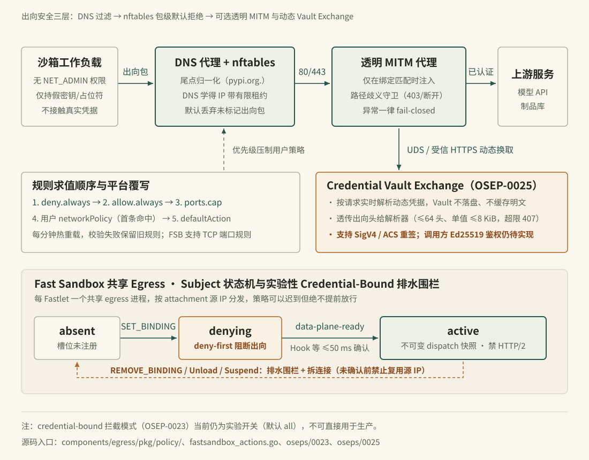

出向网络：DNS、nftables 与共享 Egress 状态机
给沙箱加出向白名单听起来像个十分钟的活，真写起来却处处是漏洞：只做 DNS 过滤，沙箱里的代码直接拨硬编码 IP 就绕过去了；改成全 IP 防火墙，运维根本写不出 pypi.org 或 *.github.com 背后不断漂移的 CDN 地址池；把防火墙装在沙箱容器里，拿到 root 的代码自己敲一行命令就能清空规则。
OpenSandbox 的 components/egress/ 用两层联动加权限剥离解开了这个死结，并在 1.2.1 至 1.3.0-rc.2 补齐了 Fast Sandbox 共享 egress 的端口策略、热重载和实验性 credential-bound 排水围栏。
执行位置：数据路径上，权限在沙箱外
容器后端（Docker 与 Kubernetes）把 egress 部署成与沙箱共享网络命名空间的 sidecar，且整个 Pod 里只有 egress sidecar 持有 NET_ADMIN。沙箱主容器的所有出向包都必须穿过这层命名空间，但主容器自己没有改表权限，从根本上挡住了内部关防火墙的可能。池化预热 Pod 无法按请求临时加 sidecar，所以 poolRef 与 networkPolicy 组合会被控制面拒绝，策略必须提前写进 Pool 模板。
Fast Sandbox 走另一套 profile（OPENSANDBOX_EGRESS_PROFILE=fast-sandbox）：一台 Fastlet Pod 里跑着多台 microVM，每台挂独立 sidecar 太吃内存，因此改为每 Fastlet 启动一个共享 egress 进程，把每台沙箱抽象成一个 subject，按预置网络槽位的源 IP 分发流量。

两层过滤与平台压制租户的优先级
第一层是 DNS 代理。所有发往 53 端口的查询被重定向到 egress 内置 DNS 代理：命中拒绝规则的域名直接回 NXDOMAIN；放行的域名向上游解析，并把返回的 IP 地址记入动态允许集合。1.3.0-rc.2 修正了一个隐蔽的匹配漏洞：带根尾点的域名规则（例如 pypi.org. 或 *.github.com.）以前会被静默忽略并跌落到 defaultAction，现在统一归一化为无尾点形式正常生效。同时 1.3.0-rc.1 补齐了两处 DNS 协议卫生：给非 EDNS UDP 客户端的应答严格压在 512 字节以内并置 TC 位引导走 TCP，不再塞入对方未请求的 OPT 记录；OPENSANDBOX_EGRESS_DNS_UPSTREAM 里填了 0 或 70000 这类非法端口时在启动期直接失败，不再带着坏配置启动后把每次查询都回成 SERVFAIL。
第二层是 dns+nft 包级过滤。nftables 默认丢弃未放行的出向包，只放行静态 IP/CIDR 白名单和 DNS 代理学到的动态地址集合。学到的 IP 携带有限租约（活跃 TCP 连接由刷新循环续租，UDP/QUIC 只靠 DNS TTL），保证放行不会悄悄变成永久通行证。在 1.2.1 里，dns+nft 模式下的 sidecar PATCH/DELETE 策略接口新增了可选参数 dropEstablished=true，允许在撤权时主动安装丢包规则切断既有连接（该参数发数据包丢弃而非 TCP RST，且暂不支持 Fast Sandbox、dns-only 或 live-revision 模式）。
规则求值顺序在 components/egress/pkg/policy/always_rules.go 里写死，租户策略永远压不过平台红线：
- 平台
deny.always：运维拒绝列表永远优先生效，即使租户写了allow； - 平台
allow.always：平台明文放行的公共目标（注意若与deny.always冲突仍需在 deny 列表挖洞，deny 压倒 allow）； - 端口地板
reachable.ports.cap：列出允许的 TCP 端口或区间，egress 自动取补集插在所有用户规则之前，白名单外的端口一律封死； - 用户
networkPolicy：按声明顺序首条命中生效，缺省落入defaultAction（1.2.1起非法取值直接拒接，防止静默退化成 fail-open）。
平台规则文件每分钟热重载一次，并且自 1.2.1 起扩展到 Fast Sandbox 共享 egress：重载采用原子切换，必须先通过 nftables 验收才发布，失败则原样保留上一份规则；重载成功会清掉旧的 DNS 租约，强迫受影响域名重新走一遍策略审查。部署时运维 ConfigMap 必须按目录挂载，不能用 subPath，否则 kubelet 不会投影更新。
TCP 端口规则的边界
一条策略规则可以只写 ports（如禁止一切出向 25 端口防发垃圾邮件），或将 IP/CIDR 与 ports 组合。边界很清晰：只管 TCP 不管 UDP，单条规则最多 256 个端口，域名目标绝不能与 ports 混写（因为域名在 DNS 层求值，那一刻还没有端口信息），删除纯端口规则需显式传空目标串 ""。同时从 1.2.1 起，Fast Sandbox 共享 egress 也已经支持每 subject 的 TCP 端口和 IP/CIDR 加端口策略（涵盖经 MITM 转发时的原始目的地址校验）。另外要留意无 target 的纯端口 allow 规则对 DNS 代理不可见，在默认拒绝模式下仍需配合显式域名 allow 才能解析主机名。
透明 TLS 拦截与上游代理
前两层管能不能连，第三层透明 MITM（由 egress 托管的 mitmproxy 监听 80/443 及可选额外端口）管连上去发什么。sidecar 导出自己的 CA 并由沙箱启动脚本装入系统、NSS 与 JDK 信任库（1.2.1 起 execd 会在 Kubernetes egress sidecar 轮换 CA 后自动刷新 MITM 信任），沙箱内工具无需关证书校验即可通信。
如果上游环境要求走企业代理，配置 OPENSANDBOX_EGRESS_UPSTREAM_PROXY 后所有 MITM 流量经 CONNECT 链式出站并坚持 fail-closed：无法走链式代理的无 SNI、匹配 ignore_hosts 或 UDP 流量直接拒绝而非直连，且代理目标本身在 dns+nft 下只对 mitmproxy 进程 UID 放行。1.3.0-rc.2 还改进了上游 TLS 排障体验：上游证书校验失败时，egress 日志会输出连接 ID 和固定原因码（如 self_signed），不再吐出敏感主机名、证书或凭据，运维不用开冗长调试日志也能看懂 502 的根因。
Fast Sandbox Subject 状态机与实验性 Credential-Bound 拦截
在 Fast Sandbox 共享 egress 里，每个沙箱对应一个 subject，状态机强制遵循策略可以迟到、绝不提前放行：
absent --SET_BINDING--> denying --data-plane-ready--> active
^ | |
+----REMOVE_BINDING------+----------------------------+新槽位注册进 denying 立刻阻断全部出向，直到数据面就绪 Hook 确认生效才进入 active。forward 路径用 meta mark 0x2 标记放行流量并由主链丢弃未标记包，刻意不发显式 accept 裁决，避免在 bridge-nf-call-iptables=1 拓扑下把包送回二层桥导致丢包。
面向未来生产隔离的实验性模式 OPENSANDBOX_EGRESS_FSB_INTERCEPTION_MODE=credential-bound（OSEP-0023，默认仍为 all）在 1.3.0-rc.1 与 rc.2 连续补齐了四块关键地基：
- 不可变 dispatch 快照与禁 HTTP/2：已准入的 HTTP/1.1 请求绑定到握手时的不可变 subject 快照并做响应头脱敏，subject TLS 显式禁用 HTTP/2 协商；被拒绝的 TLS 握手立刻关闭客户端传输，不让它干等超时。
data-plane-ready50 ms 确认门禁：Actions v1 的data-plane-readyHook 最多等待 50 ms 拿到 subject 快照确认，消除了首次创建必吃拒接的毛刺。- 排水围栏与源 IP 复用阻断：移除绑定时按
OPENSANDBOX_EGRESS_REVISION_DRAIN_TIMEOUT_SECONDS对既有解密连接执行排水围栏；在 Unload、挂起、接收器故障或关机时拆除全部 subject 传输，在旧连接确认拆净前拒绝复用同一个源 IP，并输出低基数的迁移状态计数与延迟直方图。
这个模式目前仍标记为实验特性且默认关闭，真正的生产流量仍走默认 all 模式。此外需要牢记两条硬性不兼容：egress 不能与透明服务网格（Istio/Envoy）同 Pod 共存，也不能跑在 gVisor 上（缺少所需 nftables 特性）。
关闭 sidecar 时，egress 会先维持 DNS 与防火墙规则直到在途日志与遥测发完（Docker 侧给 9 秒停止预算），再拆除规则。OTLP 指标特意把策略拒绝与DNS 解析器故障拆成两个计数器，绝不把查询域名放进 label，防止高基数拖垮监控。
源码入口
| 路径 | 看什么 |
|---|---|
components/egress/pkg/policy/policy.go |
策略模型、端口范围与尾点域名归一化 |
components/egress/pkg/policy/always_rules.go |
deny.always、allow.always 与 reachable.ports.cap |
components/egress/fastsandbox.go |
共享 egress 入口与 subject 源 IP 分发 |
components/egress/fastsandbox_actions.go |
SET_BINDING / data-plane-ready Hook 与排水围栏 |
docs/architecture/network/egress.md |
两层执行、透明 MITM 与已知边界 |
docs/guides/network-security.md |
替代旧 network-isolation.md 的部署、优先级与热重载指南 |
oseps/0023-credential-bound-tls-interception.md |
实验性 credential-bound 拦截演进路线 |